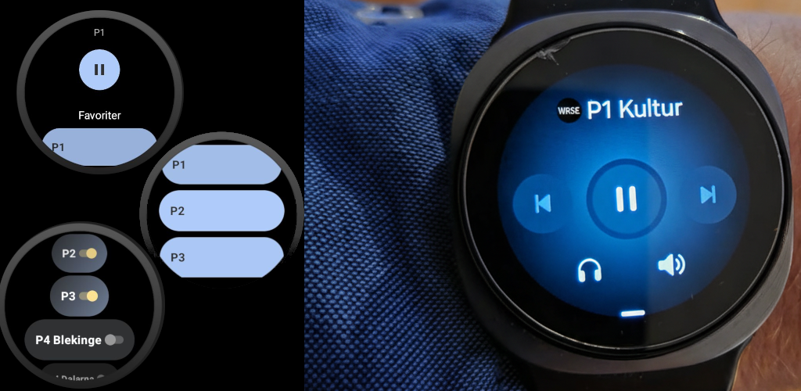

Upplev friheten med WatchRadioSE – din nya följeslagare för radio på handleden! Glöm telefonen hemma och strömma dina favoritkanaler från Sveriges Radio direkt på din Wear OS-smartklocka. WatchRadioSE ger dig oberoende tillgång till live-webbströmmar över LTE eller Wi-Fi, perfekt för löprundan, gymmet eller bara en stunds avkoppling.
Om WatchRadioSE

Varför WatchRadioSE?
- Helt fristående: Njut av radio utan att ha din telefon i närheten. Anslut till LTE-nätet eller Wi-Fi direkt från din klocka.
- Tillgång till Sveriges Radios strömmar: Få tillgång till populära kanaler som P1, P2, P3, P4-kanaler och många fler som erbjuds via Sveriges Radios webbströmmar.
- Personliga favoriter: Anpassa din upplevelse! Välj enkelt ut och visa endast dina favoritkanaler på huvudskärmen för snabb och smidig åtkomst.
- Optimerad för Wear OS: Ett intuitivt och tydligt gränssnitt, designat specifikt för den runda klockskärmen, gör det enkelt att navigera och byta kanal med ett tryck.
- Anpassa din lyssning: Justera enkelt bitrate (32, 96, 128, 320 kbps) och buffertstorlek (Låg, Normal, Hög) direkt i appen för att optimera ljudkvalitet och prestanda efter dina preferenser och nätverksanslutning.
- Enkel hantering: Starta, pausa och byt kanal direkt från huvudskärmen med stora och tydliga kontroller.
Så fungerar det:
- Ladda ner och öppna WatchRadioSE på din Wear OS-klocka.
- Välj dina favoritkanaler i inställningarna för att de ska visas på huvudskärmen.
- Välj önskad kanal och börja lyssna!
- Justera bitrate och buffert för bästa upplevelse.
Viktigt att notera:
WatchRadioSE är en oberoende radioapp och har ingen officiell koppling till Sveriges Radio. Appen fungerar som en ljudströmningsklient som spelar upp de offentligt tillgängliga webbströmmarna från svenska radiostationer (som publiceras på exempelvis sverigesradio.se). Vi varken äger, kontrollerar eller ansvarar för innehållet i dessa strömmar. Vårt syfte är att erbjuda en bekväm plattform för dig att lyssna på radio via din smartklocka.
Ladda ner WatchRadioSE idag och njut av friheten med radio, direkt på din handled!
Anmäl dig som betatestare!
Vill du vara bland de första att testa WatchRadioSE och hjälpa oss att förbättra appen? Anmäl ditt intresse nedan, så lägger vi till dig som testare i Google Play Console.